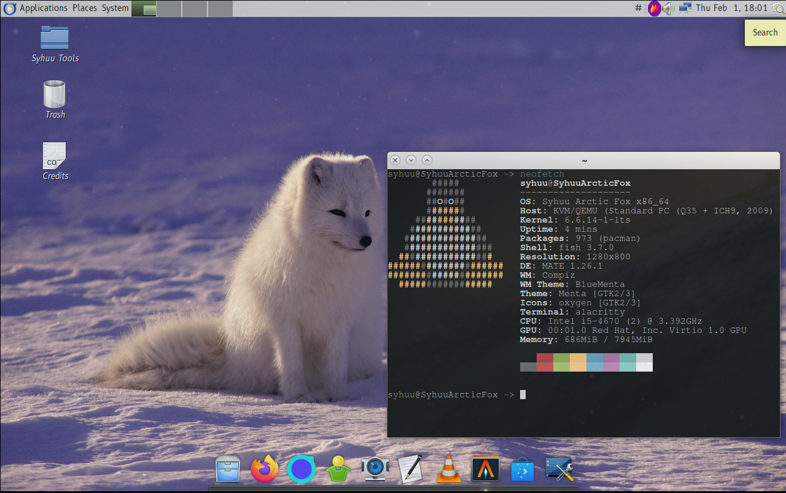

Syhuu
Syhuu is a work in progress Linux distribution based on Arch Linux. It is designed to be user friendly and has common utilities such as Wine and Flatpak out of the box.
Syhuu Arctic Fox
Arctic Fox is the name of the first version of Syhuu, currently it is in the testing stage and it currently lacks an installer. Currently it is available as a img file that can be copied over to a hard drive.
Syhuu Wallpaper by Jonatan Pie on Unsplash
Website background texture by João Vítor Duarte on Unsplash
The B612 typeface is licensed under OFL
Syhuu Logo and other Syhuu assets are licensed under CC BY 4.0
Syhuu tooling including the website is licensed under the MIT license
Syhuu is a Bobin project.